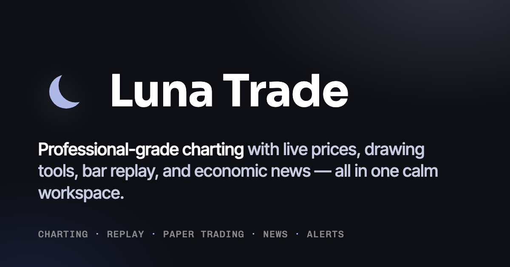
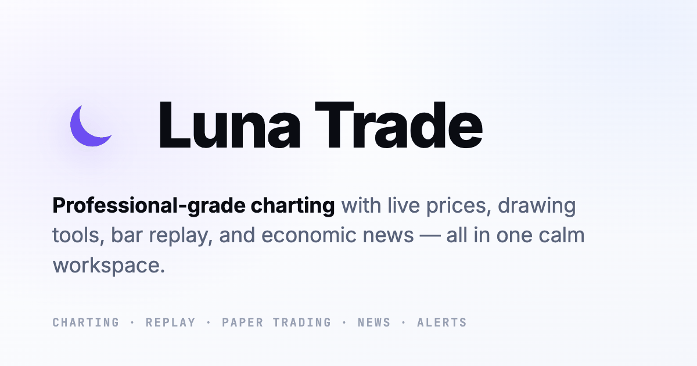
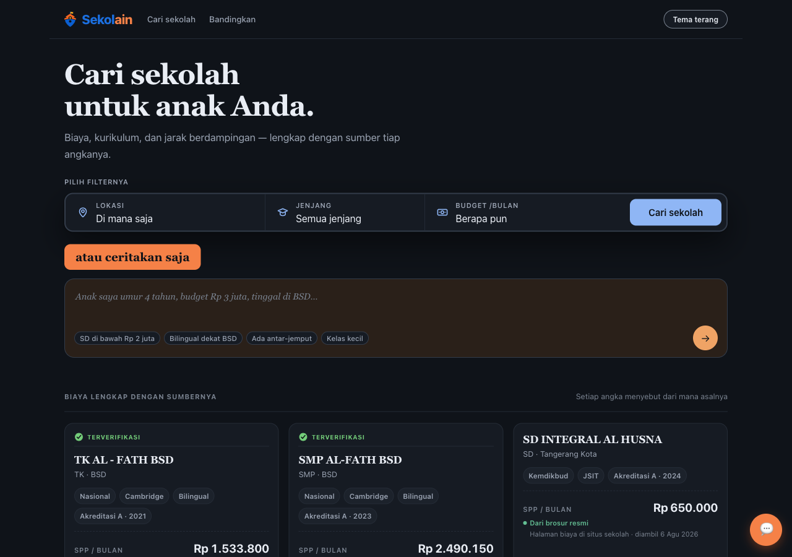
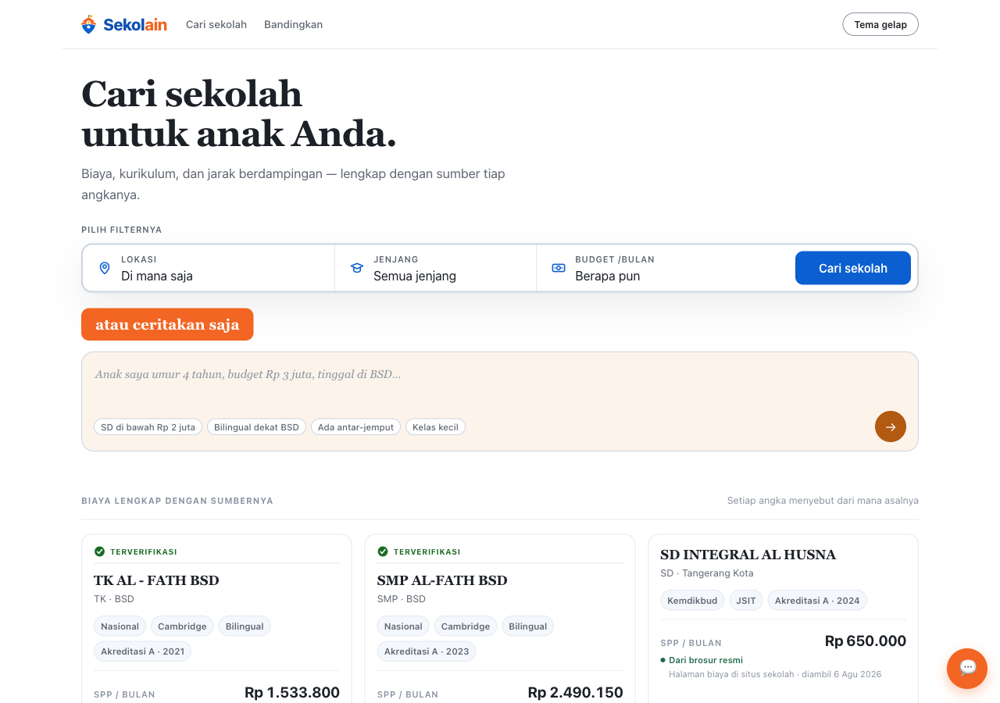

Products we've designed, built, and shipped
Beyond client engagements, our team designs and engineers its own platforms end-to-end. Here's a closer look at two of them — what they do, and what's running under the hood.
Luna Trade
Trade. Grow. Enjoy. — an all-in-one forex charting workspace with bar-replay backtesting and paper/live trading, live at lunatrade.domudame.com.


Overview
Luna Trade started as a manual bar-replay backtester — the kind of candle-by-candle drill serious forex traders use to practice reading price action without hindsight bias. It grew into a full workspace: the same charting engine now drives paper and live trading through OANDA, a trading journal, watchlists with alerts, and market news, so a trader can practice, plan, and execute without switching tools.
Key features
- Multi-timeframe bar replay with anti-lookahead protection and auto-extending data
- Full drawing toolkit — trendlines, zones, Fibonacci retracement, rays, measure tool, on-chart text, object locking
- Drag-to-set Entry/SL/TP order entry with paper and live trading via OANDA
- Risk-based position sizing, pending orders, trailing stop-loss, and partial close
- Trading journal with win rate, total R, P&L, equity curve, max drawdown, and expectancy
- Watchlist with price alerts via toast and browser notifications
- Built-in indicators (MA/EMA, Bollinger Bands, Volume, MACD, RSI, QT Fractal) with a parameter editor
- Economic calendar with currency bias, plus a multi-source news feed and high-impact alerts
Tech stack
Engineering note — Luna Trade ships straight from git: a
systemd timer polls main and rolls it to production in under a minute, no CI
provider required. The frontend is 56 vanilla JS modules with zero build step, backed by a
230-test Playwright E2E suite.
Sekolain
Find the right school for your child — a search-and-compare platform for private schools, launching at sekolain.com.


Overview
Parents shopping for a private school across the Tangerang corridor — BSD, Gading Serpong, Alam Sutera, Tangerang Kota, Tangerang Selatan, and Bintaro — usually piece together tuition, curriculum, and location from dozens of scattered school websites and brochures. Sekolain puts all of it side by side, with every cost figure traced back to where it came from, across a catalog of over 2,000 schools.
Key features
- Search & filter by area, school level, monthly budget, curriculum, religious affiliation, and facilities
- Side-by-side school comparison page with tuition tables
- Itemized cost breakdown — tuition, enrollment fee, annual activities, uniforms & books — each figure cited to its source
- Natural-language AI search assistant, with automatic fallback to standard filters if the API is unavailable
- "Verified" badge for schools with complete, well-sourced cost data
- Distance-based sorting from a user-supplied reference point
- Optional map view and Google reviews integration
- Automatic light/dark theme
Tech stack
Engineering note — A catalog of 2,041 schools is served entirely from a statically validated JSON dataset — no database to run or manage — backed by 821 unit tests and 66 end-to-end tests to keep the data and UI correct as the catalog grows.
Want something like this built for you?
These are our own products — the same team and process are available for yours.